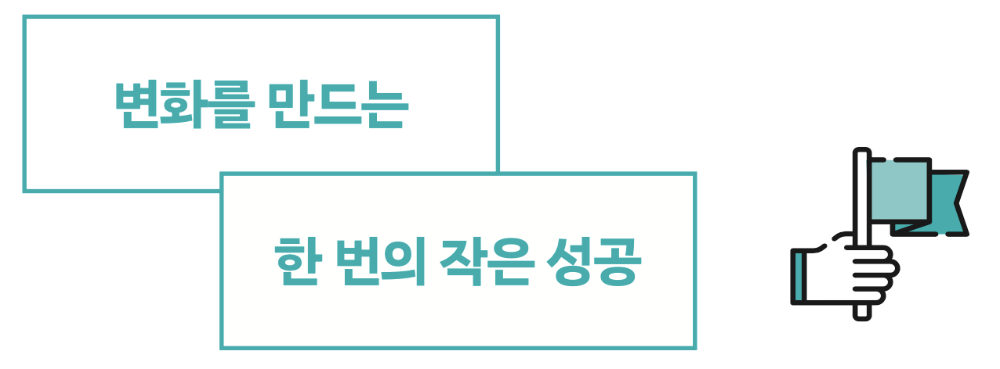

에필로그

2020년 10월, 도서 출간 제안 메일을 받았습니다. 많은 유튜버가 책을 내는 것을 봐왔지만 글을 써본 적도, 전문 지식도 없는 제가 책을 낸다니요. 유튜브에서 한 것이라고는 고작 몇 번의 도전뿐인데 이걸로 책을 쓸 수 있을까 싶었습니다. 그럼에도 언젠가 한 번쯤은 책을 내보고 싶다는 막연한 꿈이 있었기에 편집자님을 만나보기로 했습니다. 그분께서 저에게 건넨 출간 기획안을 보고 깜짝 놀랐습니다. 지금까지 제가 해온 일상 속의 작은 도전들이 20개가 넘게 나열되어 있었으니까요. 이렇게 많은 도전을 해왔다는 것을 그날 처음 알았습니다. 그리고 출간에 대한 저의 의심은 확신으로 바뀌었습니다.
처음부터 이렇게 많은 콘텐츠를 쌓을 생각은 없었습니다. 흐트러진 일상을 바로잡고자 한 달 동안 6시에 일어나보기로 마음먹었고 당장 다음 날부터 바로 실천했을 뿐입니다. 그리고 저의 의지대로 6시에 일어나는 한 번의 작은 성공은 어떤 일이든 ‘일단 하면 된다’라는 큰 깨달음을 안겨주었습니다. 그 이후로는 매일 일기 쓰기, 매일 계단으로 다니기, 12킬로미터 마라톤 완주하기, 커피 끊어보기처럼 인생에 변화를 줄 수 있는 작은 도전들에 과감하게 뛰어들었죠.
그동안 수많은 자기계발서를 읽었지만 저의 삶이 거의 변화하지 않은 것은 아마 책장을 덮은 뒤 반드시 따라와야 하는 ‘실천’이 없었기 때문일 것입니다. 혹시 이 책을 읽으며 ‘나도 한번 해볼까?’ 하는 마음이 든 적이 있으신가요? 그렇다면 이것저것 생각하지 말고 지금 당장 실천해보세요. 한 번의 작은 성공이 여러분의 삶에 큰 변화로 이어지길 진심으로 기원합니다.
Don’t think, just DO!